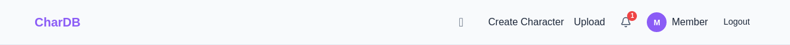
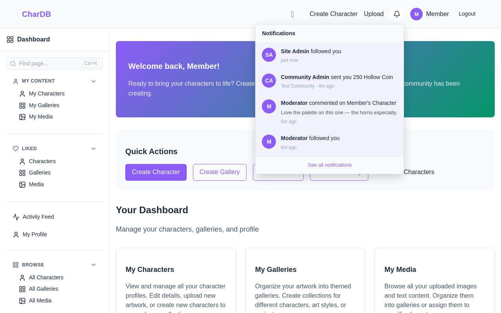
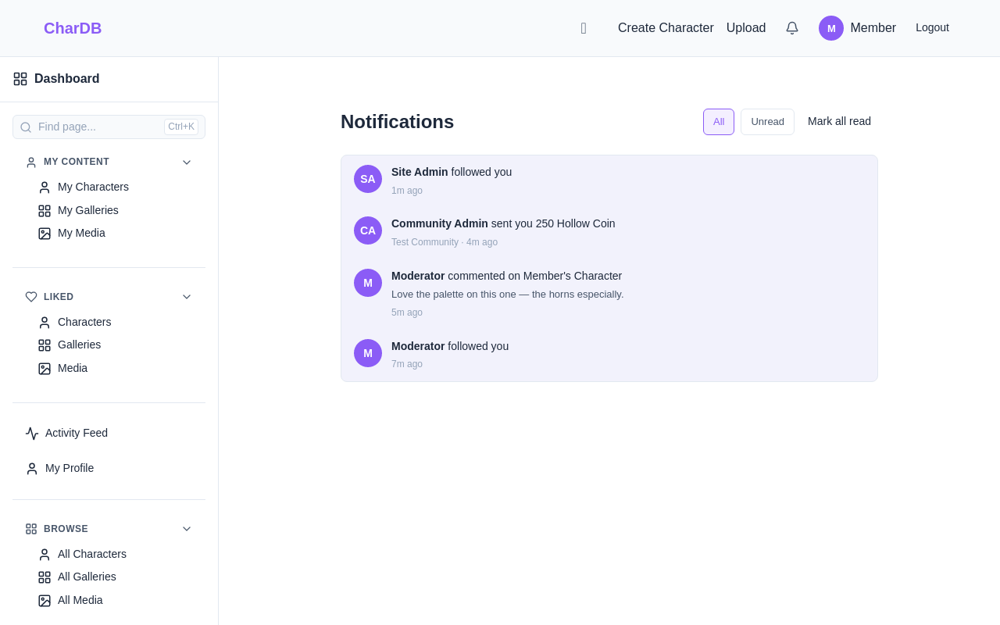
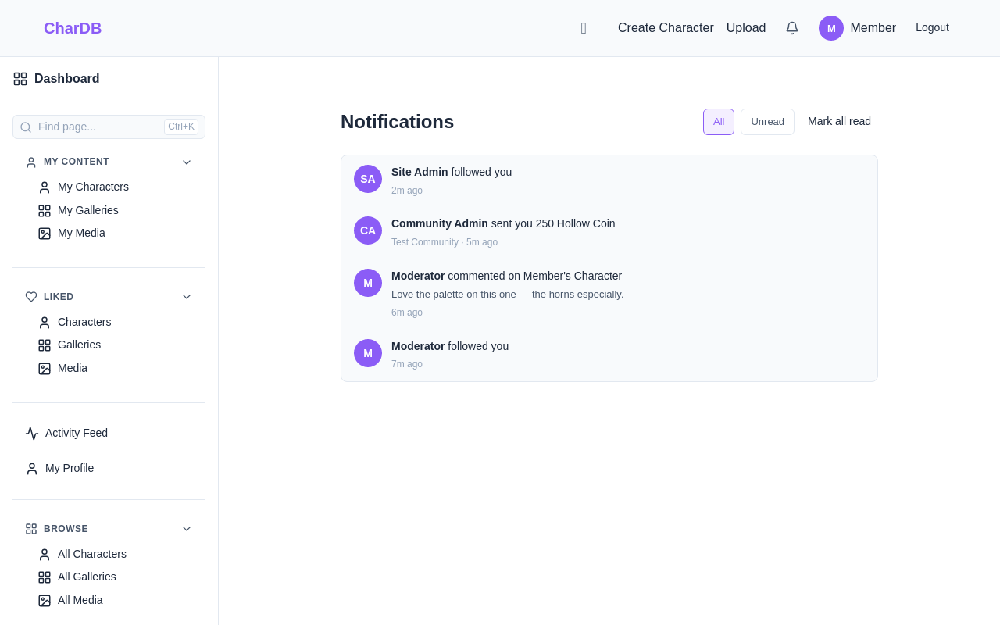

A bell, a dropdown, and a history of what happened to you
Things happen to you on CharDB while you are not looking. Someone follows you, someone comments on a character, staff hand you an item or a pile of coin. Notifications are how you find out.
A bell in the top bar carries a count. Opening it shows the most recent few; /notifications has the whole history with an unread filter. Clicking one takes you to the thing it is about.
How many have arrived since you last looked
The most recent few, without leaving the page
Everything, filtered to unread when you want it
The bell sits between Upload and your avatar. When something has arrived since you last opened it, it carries a count.

Each row names who caused it, what they did, and when. A comment brings enough of itself along to be recognisable. Anything belonging to a community says which one.

These are the kinds that exist today:
| Kind | Reads as | Takes you to |
|---|---|---|
| Follow | Moderator followed you | Their profile |
| Comment | Moderator commented on Member's Character, with the first line or so of the comment | The character, gallery or media commented on |
| Item granted | Staff gave you 3 × Rusty Locket | The item |
| Item revoked | Staff took back 3 × Rusty Locket, and the reason if one was given | The item |
| Currency received | Community Admin sent you 250 Hollow Coin | The community's currencies |
See all notifications at the bottom of the dropdown opens the history. Same rows, no limit, plus a filter for the ones you have not opened yet and a way to clear them all at once.


A notification is written the moment the thing happens, and it keeps a copy of what it needs to say. That has a consequence worth knowing: if the item is later revoked, the character deleted, or the currency renamed, the notification still reads correctly. It said what it said at the time.
What can stop working is the link. Clicking a notification whose subject no longer exists takes you to a page that is gone. The message stays; the destination is the part that can rot.
The badge refreshes every five minutes, and again whenever you come back to the tab. A backgrounded tab costs nothing.
So the count can be up to five minutes stale if you sit on the same page without switching away. Switching back to the tab, or loading any page, brings it current. Notifications are not chat; nothing here is urgent enough to justify asking the server every few seconds on behalf of everyone signed in.